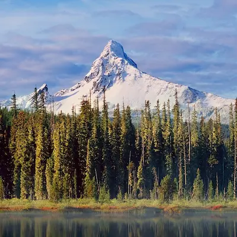
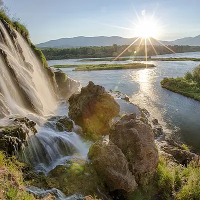
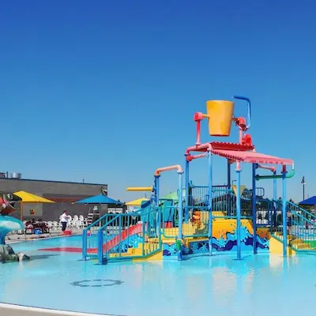
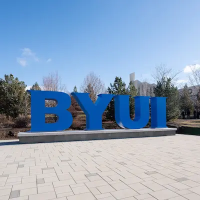
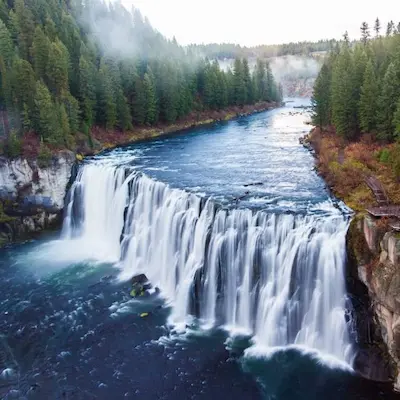
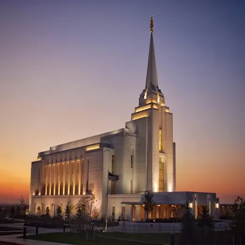
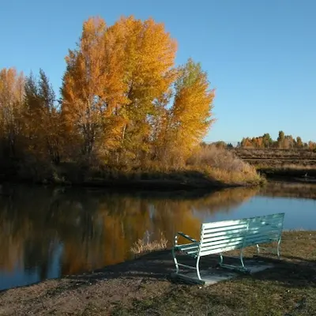
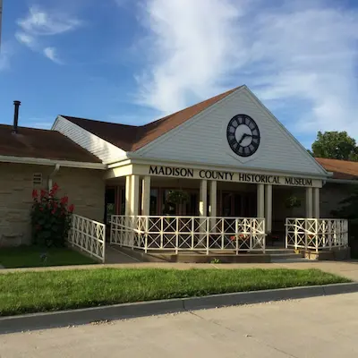

Rexburg is a gateway to some of the most stunning natural landscapes in Idaho. Visitors can hike, bike, or enjoy winter sports in the nearby Targhee National Forest, Grand Targhee Resort, and Island Park. The Henry's Fork of the Snake River is a prime location for fly fishing, while the Rexburg Rapids water park offers family-friendly fun during summer.
Rexburg is home to rich cultural history and heritage. Learn about the region’s early pioneers at the Madison County Historical Museum or visit the iconic Rexburg Tabernacle, a historic site for the community's religious gatherings. For a glimpse into the town’s cultural importance, explore the Brigham Young University-Idaho (BYU-Idaho) campus, which hosts regular performances, art exhibits, and cultural events.
Festivals and Events
Rexburg is a lively town with year-round events. Attend the Rexburg Summer Festival, which includes parades, live music, and food vendors, or the Rexburg Winterfest, a festive holiday event complete with light displays and outdoor activities. Local arts and music festivals are also a regular highlight, providing entertainment and opportunities to discover the local talent.

Targhee National Forest

Island ParkHenry's Fork

Rexburg Rapids

BYU-Idaho

Mesa Falls

Rexburg, Idaho Temple

Nature Park

Madison County Historical Museum